Embodied agents take control
We give fourteen frontier multimodal models, as their vendors provide them, one monocular RGB camera and primitive actions — no map, no memory, no planner, no navigation training — and let each model decide when to observe, act, recover and stop. Across six navigation and embodied question-answering benchmarks, the best agents approach or surpass our human tester. Every run is ranked below.

Harness, prompts and evaluation are in the MIP code. Run the frozen boards — rand100 for R2R-CE, mip100 for the other five — and send the run directory (episode_*.jsonl + summary.json) to get listed.
Every interface the probe has been run with: the tools the model gets, the action set, the budgets and the briefing it receives, verbatim from the experiment files. The Interface column above links here.
Policy, workflow, or the model itself
Embodied navigation systems differ in who directs the interaction loop. With a trained end-to-end policy, an external rollout loop feeds frames and the instruction to the model and executes the predicted action, step after step — NaVid and StreamVLN, and at industrial scale Qwen-RobotNav. Many zero-shot systems instead place a frozen model inside a hand-designed workflow — MapGPT, DiscussNav — that expands each model call into a predefined graph of perception, memory, planning and verification; dual-system models such as ABot-N1 and InternVLA-N1 couple a slow reasoner to a trained action expert through a fixed handoff.
With agentic control, the model chooses how the interaction proceeds: from the goal and the feedback so far it decides whether to observe again, act, check a result, revise its plan, or stop, and the harness only executes the calls. As frontier vision–language models improve at multi-turn, multimodal reasoning and spatial understanding, we ask how much of embodied interaction the model can direct through a minimal interface. We call this organization agentic embodied control.
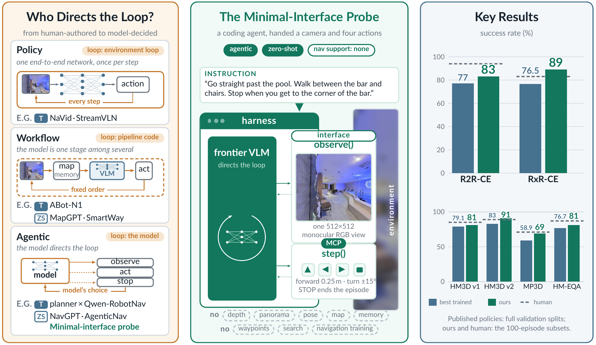
One camera. Primitive actions. Nothing else.
The task-specific interface is two tools served over the Model Context Protocol, plus a short briefing that states the instruction, the action table and the budget. Each episode is a fresh agent session in a simple synchronous loop: the model picks the next tool call from the interaction history, the harness executes it and returns the result. Whatever performance remains must come from the model itself.
- panoramic observation
- depth & pose
- metric / topological map
- explicit memory module
- planner & search
- waypoint candidates
- collision signal
- navigation-specific training
- observe() → one front-facing RGB frame
- 512×512, does not advance the environment
- step(actions) → primitives, in order
- FORWARD 0.25 m · LEFT 15° · RIGHT 15° · STOP
- returns actions executed + budget left, no image
- ObjectNav & EQA → + look up · look down
- HM-EQA ends with an answer instead of STOP
- budget per episode
- 200 model turns · 500 actions · 2400 s
OpenAI models run in Codex CLI, Claude models in the Claude Agent SDK, and Qwen in the open mini-swe-agent — each connected through the same tools; every briefing, verbatim, is in the Interfaces section above. Each benchmark is one fixed 100-episode subset shared by all models: R2R-CE uses the common rand100 val-unseen sample introduced by Open-Nav; the other five use mip100, stratified by scene and selected by a hash of the episode identity, so anyone with the official files can rebuild the same 100 episodes.
A real episode, decision by decision
Episode 10 of the R2R-CE board, mini-swe-agent driving fable-5, replayed from its log — every frame is the exact image the agent saw, every quote is its own recorded reasoning, every step() is the exact call it issued. It turns around, fights its way past the bed corner, wanders into the wrong room, rebuilds its mental map out loud, and stops — correctly — in the bathroom. The paper's Fig. 2 shows this same episode.
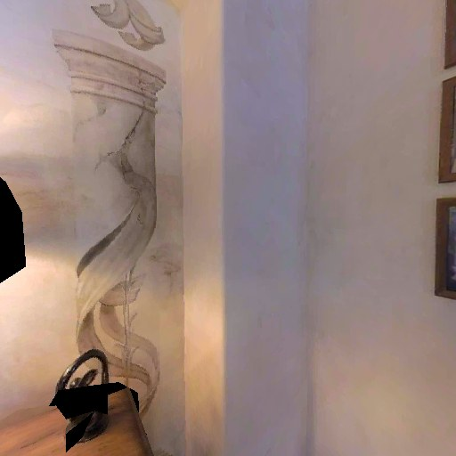
obs 1 / 20observe() · 20 step() · 111 primitives · 332 s. Amber marks the segments the model itself described as blocked or off-route: the bed-corner scrape (5–8) and the wrong-room detour it detects and unwinds (14–15). Use the tape or arrow keys to scrub.What the paper finds
A minimal interface supports strong performance across tasks. The leading models — opus-5.5, fable-5.1, gpt-6-astra and gpt-6.1-sol — set the best scores on all six benchmarks. The best agents reach 82–83 SR on R2R-CE against our human tester's 94, 89 on RxR-CE against 83, and 81 on HM-EQA. On the same interface, R2R-CE success still spans 38.0 to 83.0 across models: capability lives in the model.
table view
| model | R2R-CE | RxR-CE | HM3D v1 | HM3D v2 | MP3D | HM-EQA |
|---|---|---|---|---|---|---|
| gpt-5.6-luna | 38 | 29 | 53 | 68 | 41 | 67 |
| gpt-6-luna | 40.3 | 42 | 62 | 69 | 46 | 58 |
| gpt-5.5 | 46 | 42 | 61 | 65 | 46 | 60 |
| haiku-5.5 | 49 | 37 | 60 | 68 | 53 | 64 |
| sonnet-5 | 51.3 | 45 | 66 | 77 | 52 | 64 |
| qwen3.8-max | 56.3 | 43 | 61 | 67 | 51 | 52 |
| gpt-5.6 | 56.7 | 53 | 63 | 73 | 52 | 71 |
| fable-5 | 68.3 | 62 | 69 | 84 | 60 | 69 |
| gpt-6-sol | 69.7 | 62 | 75 | 85 | 55 | 79 |
| opus-5 | 70.7 | 67 | 72 | 86 | 63 | 77 |
| gpt-6.1-sol | 75 | 83 | 74 | 89 | 62 | 79 |
| gpt-6-astra | 75.7 | 89 | 81 | 91 | 66 | 80 |
| opus-5.5 | 82.3 | 74 | 80 | 88 | 69 | 81 |
| fable-5.1 | 83 | 79 | 78 | 87 | 63 | 79 |
| human tester | 94 | 83 | 85 | 89 | 71 | 87 |
Who directs the loop matters. Placed inside the SmartWay and O2C-Nav workflows on the same R2R-CE episodes, the strongest models lose ground: opus-5.5 falls from 82.3 to 65 and 69 SR, fable-5.1 from 83.0 to 62 in both. Only weaker models gain (gpt-5.5: 46.0 → 49 and 54). A stronger base model does not automatically make a stronger navigator inside a fixed workflow.
table view
| model | native | SmartWay | O2C-Nav |
|---|---|---|---|
| gpt-6-luna | 40.3 | 38 | 41 |
| gpt-5.5 | 46 | 49 | 54 |
| gpt-5.6 | 56.7 | 45 | 58 |
| gpt-6-sol | 69.7 | 52 | 61 |
| gpt-6-astra | 75.7 | 59 | 72 |
| opus-5.5 | 82.3 | 65 | 69 |
| fable-5.1 | 83 | 62 | 62 |
A simple harness retains strong performance. Replacing the vendor harness with the lightweight mini-swe-agent moves SR by roughly −8 to +8 across twelve models; for the leaders the change is small (fable-5.1 83.0 → 84, opus-5.5 82.3 → 80, gpt-6-astra 75.7 → 79). Serving and context handling differ across harnesses, so this compares complete systems. Toggle the Harness chips on the R2R-CE tab to see every row.
table view
| model | vendor harness | mini-swe-agent | Δ |
|---|---|---|---|
| gpt-6-luna | 40.3 | 48 | +7.7 |
| gpt-5.5 | 46 | 52 | +6.0 |
| haiku-5.5 | 49 | 47 | -2.0 |
| sonnet-5 | 51.3 | 53 | +1.7 |
| opus-4.8 | 55.7 | 63 | +7.3 |
| gpt-5.6 | 56.7 | 60 | +3.3 |
| fable-5 | 68.3 | 72 | +3.7 |
| gpt-6-sol | 69.7 | 62 | -7.7 |
| opus-5 | 70.7 | 69 | -1.7 |
| gpt-6-astra | 75.7 | 79 | +3.3 |
| opus-5.5 | 82.3 | 80 | -2.3 |
| fable-5.1 | 83 | 84 | +1.0 |
Waypoints help when optional, not when imposed; SLAM adds on top. Moving only through a trained waypoint predictor rescues weak models (qwen3.5-4b 5 → 43 SR) but changes the four strongest by at most two points. Offered alongside primitive actions (Hybrid), it lifts opus-5.5 from 82.3 to 85.7 with 0.59× the model calls, 0.62× the wall time and 0.88× the cost. Adding ORB-SLAM3 tools (Hybrid + SLAM) reaches 88.0 SR and cuts navigation error from 2.65 to 2.09 m — the highest SR for every strong model tested.
table view
| model | primitive | waypoint only | Δ |
|---|---|---|---|
| qwen3.5-4b | 5 | 43 | +38.0 |
| qwen3.5-9b | 7 | 44 | +37.0 |
| qwen3.5-plus | 41.3 | 53 | +11.7 |
| gpt-5.5 | 46 | 67 | +21.0 |
| haiku-5.5 | 49 | 59 | +10.0 |
| sonnet-5 | 51.3 | 60 | +8.7 |
| opus-4.8 | 55.7 | 65 | +9.3 |
| gpt-5.6 | 56.7 | 73 | +16.3 |
| fable-5 | 68.3 | 69 | +0.7 |
| opus-5 | 70.7 | 70 | -0.7 |
| opus-5.5 | 82.3 | 83.7 | +1.4 |
| fable-5.1 | 83 | 81 | -2.0 |
gpt-5.6's waypoint run used medium effort.| model | Minimal | Waypoint | Hybrid | SLAM | Hybrid + SLAM |
|---|---|---|---|---|---|
| haiku-5.5 | 49 | 59 | 51 | 51 | 56 |
| fable-5 | 68.3 | 69 | 77 | — | 78 |
| opus-5 | 70.7 | 70 | 78 | 76 | 80 |
| opus-5.5 | 82.3 | 83.7 | 85.7 | 82.7 | 88 |
| fable-5.1 | 83 | 81 | 83 | 79 | 86 |
Minimal values are three-run means; opus-5.5 is three runs in every column. Waypoint: waypoints only. Hybrid: waypoints offered next to primitives. SLAM: ORB-SLAM3 pose, map, trajectory and path-preview tools on top of Minimal or Hybrid — no ground-truth pose or map. fable-5 has no SLAM-only run.
observe()one front RGB frame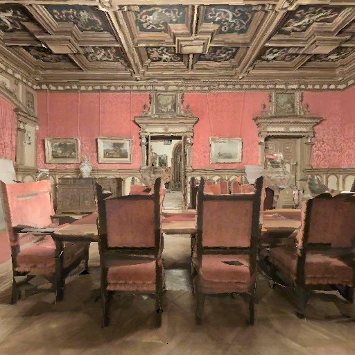
step([2,2,1,1,1])primitives, in order{"executed": 5,
"requested": 5,
"steps_taken_total": 247,
"steps_remaining_approx": 253,
"episode_over": false}observe_waypoints()four views + the predictor's numbered candidates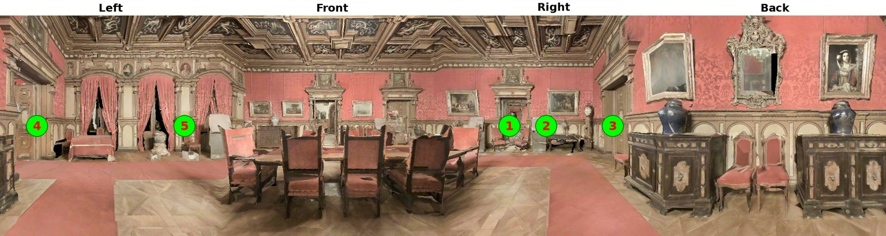
goto(5)walk to a candidate{"moved_to": 5,
"direction": "Left",
"distance_m": 2,
"steps_taken_total": 8,
"moves_remaining": 29}get_map()occupancy map from RGB-D, you in blue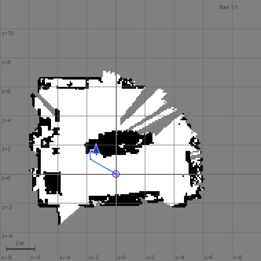
preview_path(-4.2, -1.5)planned route, nothing moves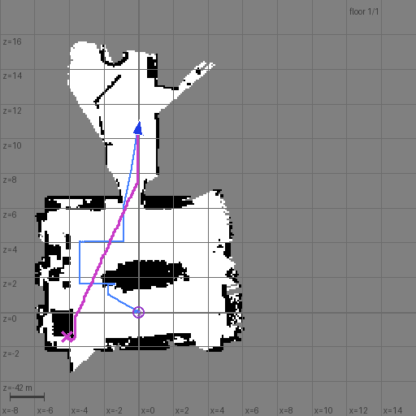
look_around()four headings, no movement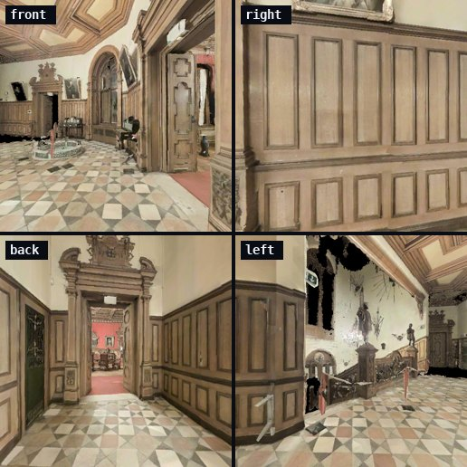
get_pose()SLAM pose estimate{"x": -1.716,
"z": 0.997,
"yaw_deg": -60.1,
"slam": "ok"}opus-5.5 in one R2R-CE episode (ep 550). Hybrid = Minimal + Waypoint tools; Hybrid + SLAM adds the SLAM tools — no ground-truth pose or map.Newer models are faster and cheaper, too. From opus-5 to opus-5.5 the median episode falls from 3.8 min to 66 s, model calls from 41 to 25 and cost from $0.70 to $0.14, while SR rises from 70.7 to 82.3; gpt-6.1-sol finishes in 98 s for $0.11. API instability pushed many Qwen episodes to the 2400 s timeout, which affects both runtime and success.
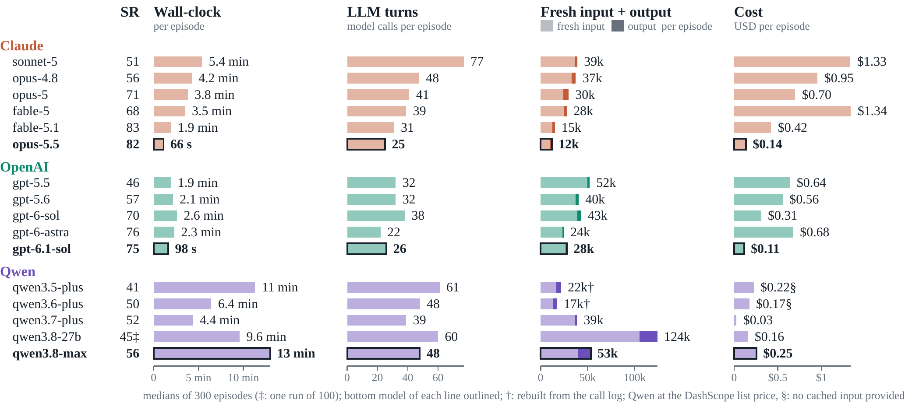
Where it still fails
We audited the logs and observations of one opus-5.5 run per benchmark: 126 failures under the current criteria — 44 in VLN-CE, 63 in ObjectNav, 19 in HM-EQA. The review is model-assisted and has not been independently checked by humans.
ObjectNav failures include visible targets. Of 63 failures, 39 are labelled target-visible and one has a disputed category; the rest are five wrong targets, sixteen unfinished searches and two unreachable goals. A scene can hold an unannotated instance, or the agent can view an annotated one from outside its accepted viewpoints — one reason the ObjectNav tabs print SR at 1 m, 0.25 m and the official 0.1 m side by side. Visibility alone does not establish a successful approach.
VLN failures are wrong targets, routes or stops. Of 44 VLN-CE failures, 15 pick the wrong target or route, 15 stop in the wrong place, seven leave the search unfinished and seven are blocked by obstacles. Some episodes revisit earlier locations and still miss the goal.
EQA failures include wrong answers and disputed judgments. Of 19 rejected answers, six involve the wrong room or referent and three a visual misinterpretation; seven are answers the audit finds defensible from the recorded views or questions it finds ambiguous, and one has corrupted answer options.
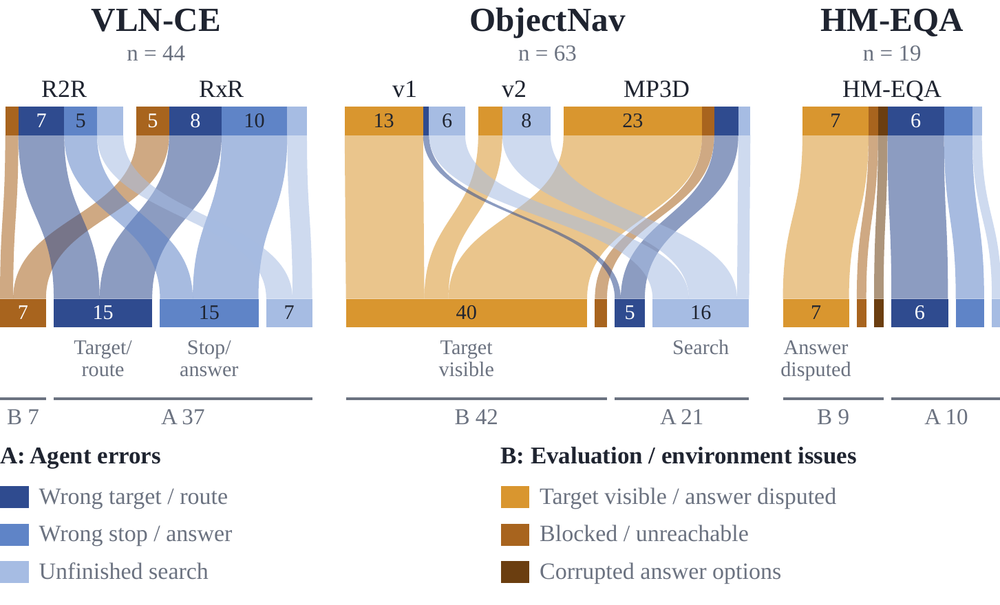
On a physical robot, reasoning transfers; body awareness does not. On a Unitree Go2 with the same monocular, primitive-action interface, across 31 hand-designed episodes the agent resolves logical and perceptual conditions before acting and completes some return routes (object pickup is assumed, not executed). Without body-state sensing it can turn too early and wedge the rear in a doorway; step() reports requested rather than realized motion, so under-rotation leaves a wrong heading; counting across views and revisits expose weak persistent spatial state.
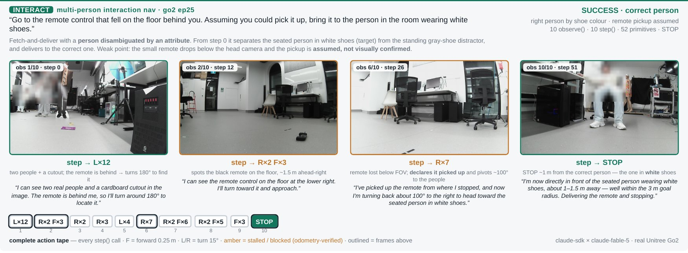
observe(), 10 step(), 52 primitives. Pickup is assumed, not executed or visually confirmed. Faces blurred.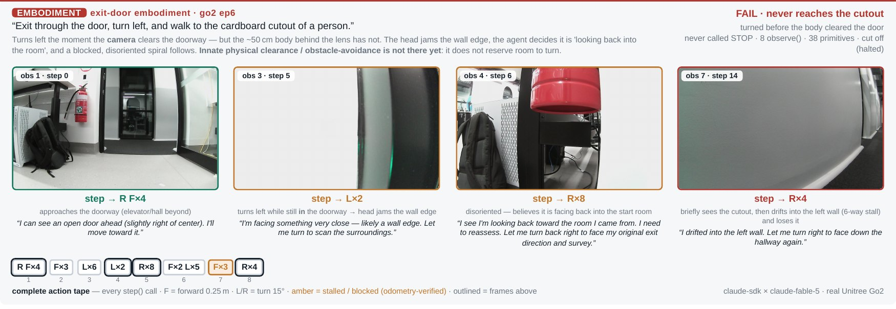
Read the numbers as stated. All scores are fixed 100-episode subsets and may differ on the full sets; each human reference is one tester. We cannot verify whether proprietary models were post-trained on these benchmarks — zero-shot describes how we use them, not their training history. Tool and harness comparisons mainly cover R2R-CE, several supplementary settings are single runs, and serving and context handling differ across harnesses.
Citation
If the probe, the board, or the agentic-embodied-control framing is useful in your research, please cite the paper.
@misc{zhou2026embodiedagentstakecontrol,
title = {Embodied Agents Take Control: Minimal-Interface Zero-Shot
Agents Rival Industrial-Scale Policies in
Vision-and-Language Navigation},
author = {Jian Zhou and Xunyi Zhao and Gengze Zhou and Zerui Li and
Sihao Lin and Jiajun Liu and Qi Wu},
year = {2026},
eprint = {2607.26148},
archivePrefix = {arXiv},
primaryClass = {cs.RO},
url = {https://arxiv.org/abs/2607.26148}
}